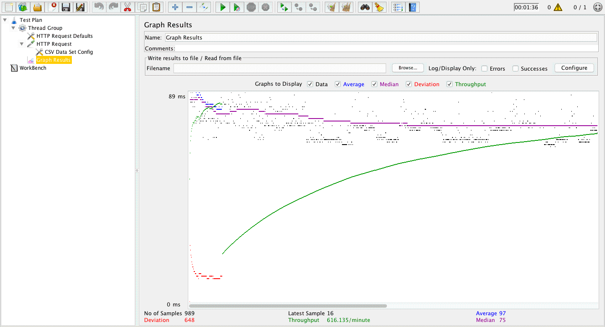
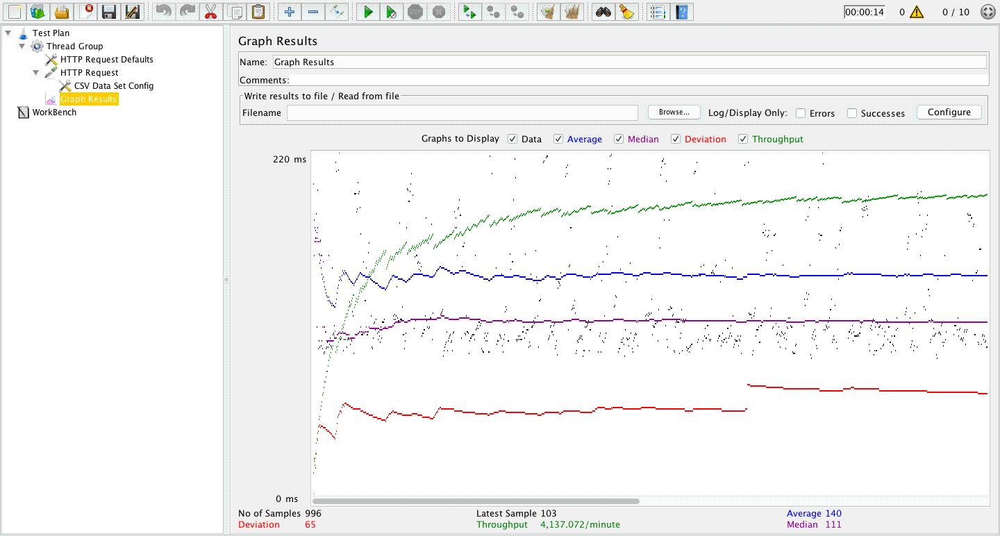
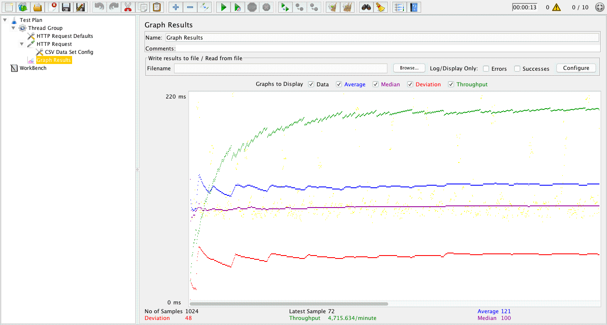
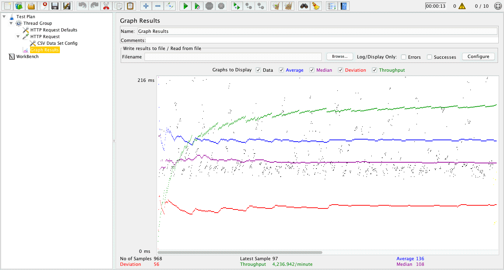

| Single-instance version cases |
Graph Results Screenshot |
Average Query Time(ms) |
Average Search Servlet Time(ms) |
Average JDBC Time(ms) |
Analysis |
| Case 1: HTTP/1 thread |
 |
97 |
3.07 |
2.04 |
single instance has shorter query time but long search and jdbc time |
| Case 2: HTTP/10 threads |
 |
140 |
3.3 |
1.37 |
10 threads longer time than 1 thread |
| Case 3: HTTPS/10 threads |
 |
121 |
10.9 |
0.07 |
https has longer search servlet time |
| Case 4: HTTP/10 threads/No prepared statements |
|
131 |
2.2 |
0.85 |
no prepared statements seems similar to prepareds ones |
| Case 5: HTTP/10 threads/No connection pooling |
 |
136 |
3.3 |
1.45 |
no connection pooling has longer consuming time |